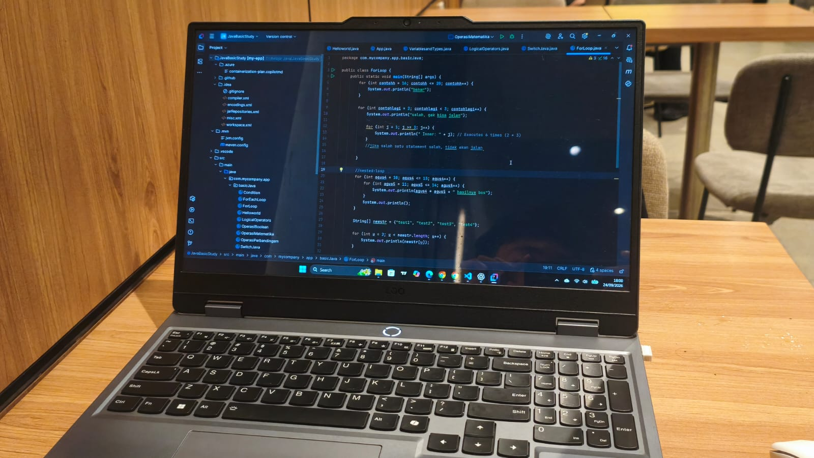

Java
Memahami fondasi pemrograman berorientasi objek yang kuat dan arsitektur enterprise skala besar.
Mempelajari beberapa bahasa pemrograman membantu saya memahami cara menyelesaikan masalah dengan pendekatan yang berbeda.
| Target | Prioritas | Tujuan |
|---|---|---|
| Java | 1 | Memahami pemrograman berorientasi objek dan membangun aplikasi backend enterprise. |
| C# | 2 | Mengembangkan aplikasi menggunakan ekosistem .NET berkinerja tinggi. |
| Go | 3 | Mempelajari bahasa yang sederhana, cepat, dan efisien untuk microservices backend. |

Representasi baris target belajar dalam bentuk katalog kartu responsif yang membungkus secara otomatis.
Memahami fondasi pemrograman berorientasi objek yang kuat dan arsitektur enterprise skala besar.
Mendalami pengembangan aplikasi modern menggunakan ekosistem .NET yang kaya fitur dan terstruktur.
Membangun sistem microservices backend yang concurrency-friendly, cepat, dan hemat memori.
Saya akan belajar secara bertahap melalui dokumentasi resmi, latihan proyek kecil, dan implementasi studi kasus nyata.